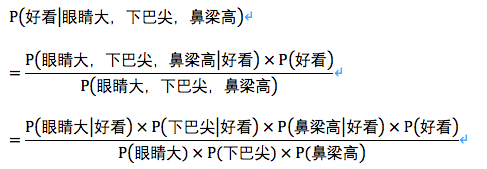

004-sklearn：特征提取，常用模型，交叉验证
这一篇，我们将对sklearn中有关特征提取，常用模型进行讲解。 主要内容包括： 1.PCA算法 2.LDA算法 3.线性回归 4.逻辑回归 5.朴素贝叶斯 6.决策树 7.SVM 8.神经网络 9.KNN算法 是不是感觉干货满满啊！Let's get moving!!!
特征提取¶
我们获取的数据中很多数据往往有很多维度，但并不是所有的维度都是有用的，有意义的，所以我们要将对结果影响较小的维度舍去，保留对结果影响较大的维度。 PCA（主成分分析）与LDA（线性评价分析）是特征提取的两种经典算法。PCA与LDA本质上都是学习一个投影矩阵，使样本在新的坐标系上的表示具有相应的特性，样本在新坐标系的坐标相当于新的特征，保留下的新特征应当是对结果有较大影响的特征。
PCA（主成分分析）¶
最大方差理论：信号具有较大的方差，噪声具有较小的方差 PCA的目标：新坐标系上数据的方差越大越好 PCA是无监督的学习方法 PCA实现起来并不复杂（过几天写一篇使用NumPy实现的PCA），但是在sklearn就更为简单了，直接食用skleran.decomposition即可
1 2 3 4 5 6 7 8 9 10 11 12 13 14 15 16 17 18 19 20 21 22 23 24 25 26 | # -*- coding: utf-8 -*- """ Created on Wed Apr 24 21:54:33 2019 @author: zangz """ import numpy as np #从sklearn中倒入数据集 from sklearn import datasets #导入pca的模块 import sklearn.decomposition as sk_decomposition #导入鸢尾花的数据集 iris =datasets.load_iris() iris_X=iris.data #数据的特征(4个属性) iris_Y=iris.target#数据的标签(3个分类,0,1,2) #创建模型 pca = sk_decomposition.PCA(n_components='mle',whiten=False,svd_solver='auto') #训练模型 pca.fit(iris_X) # 使用上面这个转换器去转换训练数据x,调用transform方法 reduced_X = pca.transform(iris_X) #reduced_X为降维后的数据 print('PCA:') print ('降维后的各主成分的方差值占总方差值的比例',pca.explained_variance_ratio_) print ('降维后的各主成分的方差值',pca.explained_variance_) print ('降维后的特征数',pca.n_components_) |
参数说明： n_components：指定希望PCA降维后的特征维度数目(>1)， 指定主成分的方差和所占的最小比例阈值（0-1），'mle'用MLE算法根据特征的方差分布情况自己去选择一定数量的主成分特征来降维 whiten： 判断是否进行白化。白化：降维后的数据的每个特征进行归一化，让方差都为1 svd_solver：奇异值分解SVD的方法{‘auto’, ‘full’, ‘arpack’, ‘randomized’}
打印结果: 下面打印的内容只是帮助大家理解pca的参数，就不打印降维后的数据了，打印出来并没有什么意义。
1 2 3 4 | PCA: 降维后的各主成分的方差值占总方差值的比例 [ 0.92461621 0.05301557 0.01718514] 降维后的各主成分的方差值 [ 4.22484077 0.24224357 0.07852391] 降维后的特征数 3 |
LDA（线性评价分析）¶
LDA基于费舍尔准则，即同一类样本尽可能聚合在一起，不同类样本应该尽量扩散；或者说，同类内具有较好的聚合度，类别间具有较好的扩散度。 既然涉及到了类别，那么LDA肯定是一个有监督算法，其实LDA既可以做特征提取也可以做分类。 LDA具体的实现流程这里就不再赘述了，直接看skleran如何实现LDA。
1 2 3 4 5 6 7 8 9 10 11 12 13 14 15 16 17 18 19 20 21 22 23 24 25 26 27 28 29 30 31 | # -*- coding: utf-8 -*- """ Created on Wed Apr 24 22:13:29 2019 @author: zangz """ import numpy as np #从sklearn中倒入数据集 from sklearn import datasets from sklearn.model_selection import train_test_split #导入使用:LDA的模块 import sklearn.discriminant_analysis as sk_discriminant_analysis #导入鸢尾花的数据集 iris =datasets.load_iris() iris_X=iris.data #数据的特征(4个属性) iris_Y=iris.target#数据的标签(3个分类,0,1,2) #数据的切割(7:3),数据会被打乱 X_train,X_test,y_train,y_test=train_test_split(iris_X,iris_Y,test_size=0.3) #建立LDA模型 lda = sk_discriminant_analysis.LinearDiscriminantAnalysis(n_components=2) #训练模型(使用训练数据) lda.fit(X_train,y_train) reduced_X = lda.transform(iris_X) #reduced_X为降维后的数据 print('LDA:') print ('LDA的数据中心点:',lda.means_) #中心点 print ('LDA做分类时的正确率:',lda.score(X_test, y_test)) #score是指分类的正确率 print ('LDA降维后特征空间的类中心:',lda.scalings_) #降维后特征空间的类中心 |
参数说明： n_components：指定希望PCA降维后的特征维度数目(>1) svd_solver：奇异值分解SVD的方法{‘auto’, ‘full’, ‘arpack’, ‘randomized’}
打印结果: 下面打印的内容只是帮助大家理解lda的参数，就不打印降维后的数据了，打印出来并没有什么意义。
1 2 3 4 5 6 7 8 9 | LDA: LDA的数据中心点: [[5.00294118 3.45588235 1.43823529 0.24411765] [5.96111111 2.78888889 4.35833333 1.36111111] [6.56857143 3. 5.55428571 2.03714286]] LDA做分类时的正确率: 0.9777777777777777 LDA降维后特征空间的类中心: [[-0.67612774 0.08223592] [-1.69411935 2.00705368] [ 2.27193737 -1.11662635] [ 2.95645633 3.1900014 ]] |
常用模型¶
机器学习常用的算法也就那几个，sklearn中对其都做了实现，我们只需要调用即可。下面每一个算法的原理我就不细讲了，只讲怎么用.
首先sklearn中所有的模型都有四个固定且常用的方法，其实在PCA与LDA中我们已经用到了这些方法中的fit方法。
1 2 3 4 5 6 7 8 | # 拟合模型 model.fit(X_train, y_train) # 模型预测 model.predict(X_test) # 获得这个模型的参数 model.get_params() # 为模型进行打分 model.score(data_X, data_y) # 回归问题：以R2参数为标准 分类问题：以准确率为标准 |
线性回归¶
线性回归是利用数理统计中回归分析，来确定两种或两种以上变量间相互依赖的定量关系的一种统计分析方法，运用十分广泛。其表达形式为y = w'x+e，e为误差服从均值为0的正态分布。
回归分析中，只包括一个自变量和一个因变量，且二者的关系可用一条直线近似表示，这种回归分析称为一元线性回归分析。如果回归分析中包括两个或两个以上的自变量，且因变量和自变量之间是线性关系，则称为多元线性回归分析。
其实，说白了，就是用一条直线去拟合一大堆数据，最后把系数w和截距b算出来，直线也就算出来了， 就可以拿去做预测了。
sklearn中线性回归使用最小二乘法实现，使用起来非常简单。
线性回归是回归问题，score使用R2系数做为评价标准。
1 2 3 4 5 6 7 8 9 10 11 12 13 14 15 16 17 18 19 20 21 22 23 24 25 26 27 28 29 30 31 | # -*- coding: utf-8 -*-
"""
Created on Thu Apr 25 09:47:00 2019
@author: zangz
"""
import numpy as np
#从sklearn中倒入数据集
from sklearn import datasets
#切分训练集测试集的模块
#from sklearn.cross_validation import train_test_split
from sklearn.model_selection import train_test_split
import sklearn.linear_model as sk_linear
#使用的鸢尾花的数据集
iris =datasets.load_iris()
iris_X=iris.data #数据的特征(4个属性)
iris_Y=iris.target#数据的标签(3个分类,0,1,2)
#数据的切割(7:3),数据会被打乱
X_train,X_test,y_train,y_test=train_test_split(iris_X,iris_Y,test_size=0.3)
#创建模型
model = sk_linear.LinearRegression(fit_intercept=True,normalize=False,copy_X=True,n_jobs=1)
#训练模型
model.fit(X_train,y_train)
#评价模型
acc=model.score(X_test,y_test) #返回预测的确定系数R2
print('线性回归:')
print('截距:',model.intercept_) #输出截距
print('系数:',model.coef_) #输出系数
print('线性回归模型评价:',acc)
|
参数说明： fit_intercept：是否计算截距。False-模型没有截距 normalize： 当fit_intercept设置为False时，该参数将被忽略。 如果为真，则回归前的回归系数X将通过减去平均值并除以l2-范数而归一化。 copy_X：是否对X数组进行复制,默认为True n_jobs：指定线程数
打印结果：
1 2 3 4 | 线性回归: 截距: 0.360007142807655 系数: [-0.23016056 0.04521955 0.33913525 0.47029646] 线性回归模型评价: 0.9252305022245975 |
逻辑回归¶
logistic回归是一种广义线性回归（generalized linear model），因此与多重线性回归分析有很多相同之处。它们的模型形式基本上相同，都具有 w‘x+b，其中w和b是待求参数，其区别在于他们的**因变量不同，多重线性回归直接将w‘x+b作为因变量，即y =w‘x+b，而logistic回归则通过函数L将w‘x+b对应一个隐状态p，p =L(w‘x+b),然后根据p 与1-p的大小决定因变量的值。如果L是logistic函数，就是logistic回归，如果L是多项式函数就是多项式回归。
说人话：**线性回归是回归，逻辑回归是分类。逻辑回归通过logistic函数算概率，然后算出来一个样本属于一个类别的概率，概率越大越可能是这个类的样本。
sklearn对于逻辑回归的实现也非常简单，直接上代码了。
逻辑回归是分类问题，score使用准确率做为评价标准。
1 2 3 4 5 6 7 8 9 10 11 12 13 14 15 16 17 18 19 20 21 22 23 24 25 26 27 28 29 30 31 32 33 34 35 36 37 | # -*- coding: utf-8 -*-
"""
Created on Thu Apr 25 09:53:41 2019
@author: zangz
"""
# -*- coding: utf-8 -*-
"""
Created on Thu Apr 25 09:47:00 2019
@author: zangz
"""
import numpy as np
#从sklearn中倒入数据集
from sklearn import datasets
#切分训练集测试集的模块
#from sklearn.cross_validation import train_test_split
from sklearn.model_selection import train_test_split
#导入逻辑回归的包
import sklearn.linear_model as sk_linear
#使用的鸢尾花的数据集
iris =datasets.load_iris()
iris_X=iris.data #数据的特征(4个属性)
iris_Y=iris.target#数据的标签(3个分类,0,1,2)
#数据的切割(7:3),数据会被打乱
X_train,X_test,y_train,y_test=train_test_split(iris_X,iris_Y,test_size=0.3)
#创建模型
model = sk_linear.LogisticRegression(penalty='l2',dual=False,C=1.0,n_jobs=1,random_state=20,fit_intercept=True,solver='lbfgs')
#训练模型
model.fit(X_train,y_train)
#评价模型
acc=model.score(X_test,y_test) #返回预测的确定系数R2
print('逻辑回归模型评价:',acc)
|
参数说明： penalty：使用指定正则化项（默认：l2） dual: n_samples > n_features取False（默认） C：正则化强度的反，值越小正则化强度越大 n_jobs: 指定线程数 random_state：随机数生成器 fit_intercept: 是否需要常量
打印结果：
1 | 逻辑回归模型评价: 0.8 |
朴素贝叶斯¶
贝叶斯分类是一类分类算法的总称，这类算法均以贝叶斯定理为基础，故统称为贝叶斯分类。 而朴素朴素贝叶斯分类是贝叶斯分类中最简单，也是常见的一种分类方法 首先根据样本中心定理，概率等于频率，所以下文的P是可以统计出来的 朴素贝叶斯的核心便是贝叶斯公式：P(B|A)=P(A|B)P(B) / P(A) 即在A条件下，B发生的概率 换个角度：P(类别|特征)=P(特征|类别)P(类别)/P(特征) 而我们最后要求解的就是P(类别|特征) 举一个生活中的例子：

最后一个公式中的所有概率都是可以统计出来的，所以P(B|A)可以计算！ 那么！我感觉我都写偏题了，这明明是机器学习算法概述嘛 那么sklearn中怎么实现呢？
1 2 3 4 5 6 7 8 9 10 11 12 13 14 15 16 17 18 19 20 21 22 23 24 25 26 27 28 29 | # -*- coding: utf-8 -*- """ Created on Thu Apr 25 10:44:43 2019 @author: zangz """ import numpy as np #从sklearn中倒入数据集 from sklearn import datasets #切分训练集测试集的模块 #from sklearn.cross_validation import train_test_split from sklearn.model_selection import train_test_split #导入贝叶斯的包 import sklearn.naive_bayes as sk_bayes #使用的鸢尾花的数据集 iris =datasets.load_iris() iris_X=iris.data #数据的特征(4个属性) iris_Y=iris.target#数据的标签(3个分类,0,1,2) #数据的切割(7:3),数据会被打乱 X_train,X_test,y_train,y_test=train_test_split(iris_X,iris_Y,test_size=0.3) model = sk_bayes.MultinomialNB(alpha=1.0,fit_prior=True,class_prior=None) #多项式分布的朴素贝叶斯 model = sk_bayes.BernoulliNB(alpha=1.0,binarize=0.0,fit_prior=True,class_prior=None) #伯努利分布的朴素贝叶斯 model = sk_bayes.GaussianNB()#高斯分布的朴素贝叶斯 model.fit(X_train,y_train) acc=model.score(X_test,y_test) #根据给定数据与标签返回正确率的均值 print('朴素贝叶斯(高斯分布)模型评价:',acc) |
参数说明： alpha：平滑参数 fit_prior：是否要学习类的先验概率；false-使用统一的先验概率 class_prior: 是否指定类的先验概率；若指定则不能根据参数调整 binarize: 二值化的阈值，若为None，则假设输入由二进制向量组成
朴素贝叶斯常用的三个模型有：
高斯模型：处理特征是连续型变量的情况 多项式模型：最常见，要求特征是离散数据 伯努利模型：要求特征是离散的，且为布尔类型，即true和false，或者1和0
打印结果：
1 | 朴素贝叶斯(高斯分布)模型评价: 0.9777777777777777 |
决策树¶
决策树是解决分类问题 决策树——ID3算法实现 这里我们直接上代码
1 2 3 4 5 6 7 8 9 10 11 12 13 14 15 16 17 18 19 20 21 22 23 24 25 26 27 28 29 | # -*- coding: utf-8 -*- """ Created on Thu Apr 25 10:44:43 2019 @author: zangz """ import numpy as np #从sklearn中倒入数据集 from sklearn import datasets #切分训练集测试集的模块 #from sklearn.cross_validation import train_test_split from sklearn.model_selection import train_test_split #导入决策树的包 import sklearn.tree as sk_tree #使用的鸢尾花的数据集 iris =datasets.load_iris() iris_X=iris.data #数据的特征(4个属性) iris_Y=iris.target#数据的标签(3个分类,0,1,2) #数据的切割(7:3),数据会被打乱 X_train,X_test,y_train,y_test=train_test_split(iris_X,iris_Y,test_size=0.3) #创建ID3算法的模型 model = sk_tree.DecisionTreeClassifier(criterion='entropy',max_depth=None,min_samples_split=2,min_samples_leaf=1,max_features=None,max_leaf_nodes=None,min_impurity_decrease=0) #训练模型 model.fit(X_train,y_train) #模型的评价 acc=model.score(X_test,y_test) #根据给定数据与标签返回正确率的均值 print('决策树模型评价:',acc) |
参数说明： criterion ：特征选择准则gini/entropy max_depth：树的最大深度，None-尽量下分 min_samples_split：分裂内部节点，所需要的最小样本树 min_samples_leaf：叶子节点所需要的最小样本数 max_features: 寻找最优分割点时的最大特征数 max_leaf_nodes：优先增长到最大叶子节点数 min_impurity_decrease：如果这种分离导致杂质的减少大于或等于这个值，则节点将被拆分。
打印结果：
1 | 决策树模型评价: 0.942857142857 |
SVM(支持向量机）¶
支持向量机是解决分类问题 目的：求解最大化间隔 支持向量机将向量映射到一个更高维的空间里，在这个空间里建立有一个最大间隔超平面。在分开数据的超平面的两边建有两个互相平行的超平面。建立方向合适的分隔超平面使两个与之平行的超平面间的距离最大化。其假定为，平行超平面间的距离或差距越大，分类器的总误差越小。 SVM的关键在于核函数 一句话讲懂核函数：低维无法线性划分的问题放到高维就可以线性划分，一般用高斯，因为效果绝对不会变差！ SVM算法思路很清晰，但是实现起来很复杂
1 2 3 4 5 6 7 8 9 10 11 12 13 14 15 16 17 18 19 20 21 22 23 24 25 26 27 | # -*- coding: utf-8 -*- """ Created on Thu Apr 25 10:44:43 2019 @author: zangz """ import numpy as np #从sklearn中倒入数据集 from sklearn import datasets #切分训练集测试集的模块 #from sklearn.cross_validation import train_test_split from sklearn.model_selection import train_test_split #导入SVM的包 import sklearn.svm as sk_svm #使用的鸢尾花的数据集 iris =datasets.load_iris() iris_X=iris.data #数据的特征(4个属性) iris_Y=iris.target#数据的标签(3个分类,0,1,2) #数据的切割(7:3),数据会被打乱 X_train,X_test,y_train,y_test=train_test_split(iris_X,iris_Y,test_size=0.3) #创建SVM算法的模型 model = sk_svm.SVC(C=1.0,kernel='rbf',gamma='auto') model.fit(X_train,y_train) acc=model.score(X_test,y_test) #根据给定数据与标签返回正确率的均值 print('SVM模型评价:',acc) |
参数说明： C：误差项的惩罚参数C kernel：核函数选择 默认：rbf(高斯核函数)，可选：‘linear’, ‘poly’, ‘rbf’, ‘sigmoid’, ‘precomputed’ gamma: 核相关系数。浮点数，If gamma is ‘auto’ then 1/n_features will be used instead.点将被拆分。
打印结果：
1 | SVM模型评价: 0.961904761905 |
神经网络¶
还在感慨因为不会tensorflow而无法使用神经网络？还在羡慕神经网络的惊人效果?不需要tf，不需要caffe，不需要pytorch！只要一句话，便可以实现多层神经网络！！！ 在这里还是简单说一下M-P神经元的原理：
𝒙𝒊 来自第𝑖个神经元的输入 𝒘𝒊 第𝑖个神经元的连接权重 𝜽 阈值(threshold)或称为偏置（bias） 𝑓 为激活函数，常用：sigmoid，relu，tanh等等 对于一个神经元来说，有i个输入，每一个输入都对应一个权重（w），神经元具有一个偏置（阈值），将所有的i*w求和后减去阈值得到一个值，这个值就是激活函数的参数，激活函数将根据这个参数来判定这个神经元是否被激活。 本质上, M-P神经元=线性二分类器 那么什么是多层神经网络？ 线性不可分：一个超平面没法解决问题，就用两个超平面来解决，什么？还不行！那就再增加超平面直到解决问题为止。 ——多层神经网络 没错，多层神经元就是用来解决线性不可分问题的。 那么，sklearn中如何实现呢？
1 2 3 4 5 6 7 8 9 10 11 12 13 14 15 16 17 18 19 20 21 22 23 24 25 26 27 | # -*- coding: utf-8 -*- """ Created on Thu Apr 25 10:44:43 2019 @author: zangz """ import numpy as np #从sklearn中倒入数据集 from sklearn import datasets #切分训练集测试集的模块 #from sklearn.cross_validation import train_test_split from sklearn.model_selection import train_test_split #导入神经网络的包 import sklearn.neural_network as sk_nn #使用的鸢尾花的数据集 iris =datasets.load_iris() iris_X=iris.data #数据的特征(4个属性) iris_Y=iris.target#数据的标签(3个分类,0,1,2) #数据的切割(7:3),数据会被打乱 X_train,X_test,y_train,y_test=train_test_split(iris_X,iris_Y,test_size=0.3) #创建神经网络算法的模型 model = sk_nn.MLPClassifier(activation='tanh',solver='adam',alpha=0.0001,learning_rate='adaptive',learning_rate_init=0.001,max_iter=200) model.fit(X_train,y_train) acc=model.score(X_test,y_test) #根据给定数据与标签返回正确率的均值 print('神经网络模型评价:',acc) |
参数说明： hidden_layer_sizes: 元祖 activation：激活函数 {‘identity’, ‘logistic’, ‘tanh’, ‘relu’}, 默认 ‘relu’ solver ：优化算法{‘lbfgs’, ‘sgd’, ‘Adam’} alpha：L2惩罚(正则化项)参数 learning_rate：学习率 {‘constant’, ‘invscaling’, ‘adaptive’} learning_rate_init：初始学习率，默认0.001 max_iter：最大迭代次数 默认200
特别： 学习率中参数： constant: 有‘learning_rate_init’给定的恒定学习率 incscaling：随着时间t使用’power_t’的逆标度指数不断降低学习率 adaptive：只要训练损耗在下降，就保持学习率为’learning_rate_init’不变 优化算法参数： lbfgs：quasi-Newton方法的优化器 sgd：随机梯度下降 adam： Kingma, Diederik, and Jimmy Ba提出的机遇随机梯度的优化器
打印结果：（神经网络的确牛逼）
1 | 神经网络模型评价: 0.980952380952 |
KNN（K-近邻算法）¶
KNN可以说是非常好用，也非常常用的分类算法了，也是最简单易懂的机器学习算法，没有之一。由于算法先天优势，KNN甚至不需要训练就可以得到非常好的分类效果了。 在训练集中数据和标签已知的情况下，输入测试数据，将测试数据的特征与训练集中对应的特征进行相互比较，找到训练集中与之最为相似的前K个数据，则该测试数据对应的类别就是K个数据中出现次数最多的那个分类。
其算法的描述为： 1.计算测试数据与各个训练数据之间的距离； 2.按照距离的递增关系进行排序； 3.选取距离最小的K个点； 4.确定前K个点所在类别的出现频率； 5.返回前K个点中出现频率最高的类别作为测试数据的预测分类。 (感觉又说多了...... - -!) 其实这个算法自己实现起来也就只有几行代码，这里我们还是使用sklearn来实现。 sklearn中的KNN可以做分类也可以做回归
1 2 3 4 5 6 7 8 9 10 11 12 13 14 15 16 17 18 19 20 21 22 23 24 25 26 27 28 29 30 31 32 33 34 35 36 | # -*- coding: utf-8 -*- """ Created on Thu Apr 25 10:44:43 2019 @author: zangz """ import numpy as np #从sklearn中倒入数据集 from sklearn import datasets #切分训练集测试集的模块 #from sklearn.cross_validation import train_test_split from sklearn.model_selection import train_test_split #导入KNN的包 import sklearn.neighbors as sk_neighbors #使用的鸢尾花的数据集 iris =datasets.load_iris() iris_X=iris.data #数据的特征(4个属性) iris_Y=iris.target#数据的标签(3个分类,0,1,2) #数据的切割(7:3),数据会被打乱 X_train,X_test,y_train,y_test=train_test_split(iris_X,iris_Y,test_size=0.3) #KNN分类模型 model = sk_neighbors.KNeighborsClassifier(n_neighbors=5,n_jobs=1) model.fit(X_train,y_train) acc=model.score(X_test,y_test) #根据给定数据与标签返回正确率的均值 print('KNN模型(分类)评价:',acc) new_X=([[1,2,5,9]]) #二维 print(model.predict(new_X)) #打印预测的结果 #KNN回归模型 model = sk_neighbors.KNeighborsRegressor(n_neighbors=5,n_jobs=1) model.fit(X_train,y_train) acc=model.score(X_test,y_test) #返回预测的确定系数R2 print('KNN模型(回归)评价:',acc) |
参数说明： n_neighbors： 使用邻居的数目 n_jobs：并行任务数
打印结果：
1 2 3 | KNN模型(分类)评价: 0.9777777777777777 [2] KNN模型(回归)评价: 0.9710843373493976 |
交叉验证¶
好的，终于说完了常用模型，感觉完全是一个算法概述啊hhhhh 既然我们现在已经完成了数据的获取，模型的建立，那么最后一步便是验证我们的模型 其实交叉验证应该放在数据集的划分那里，但是他又与模型的验证紧密相关，所以我就按照编写代码的顺序进行讲解了。 首先，什么是交叉验证？ 这里完全引用西瓜书，因为我觉得书上写的非常清楚！！！ 交叉验证法先将数据集D划分为k个大小相似的互斥子集，每个子集Di都尽可能保持数据分布的一致性，即从D中通过分层采样得到。然后每次用k-1个子集的并集做为训练集，余下的子集做为测试集，这样就可以获得K组训练/测试集，从而可以进行k次训练和测试，最终返回的是这个k个测试结果的均值。k通常的取值是10，其他常用取值为2，5，20等。
这里使用KNN做为训练模型，采用十折交叉验证。
1 2 3 4 5 6 7 8 9 10 11 12 13 14 15 16 17 18 19 20 21 22 23 24 25 26 | # -*- coding: utf-8 -*-
"""
Created on Thu Apr 25 10:44:43 2019
@author: zangz
"""
import numpy as np
#从sklearn中倒入数据集
from sklearn import datasets
#切分训练集测试集的模块
#from sklearn.cross_validation import train_test_split
from sklearn.model_selection import train_test_split
#导入KNN的包
import sklearn.neighbors as sk_neighbors
#导入交叉验证的包
import sklearn.model_selection as sk_model_selection
#使用的鸢尾花的数据集
iris =datasets.load_iris()
iris_X=iris.data #数据的特征(4个属性)
iris_Y=iris.target#数据的标签(3个分类,0,1,2)
#创建模型
model = sk_neighbors.KNeighborsClassifier(n_neighbors=5,n_jobs=1) #KNN分类
#进行交叉验证
accs=sk_model_selection.cross_val_score(model, iris_X, y=iris_Y, scoring=None,cv=10, n_jobs=1)
print('交叉验证结果:',accs)
|
参数说明： model：拟合数据的模型 cv ： 子集个数 就是k scoring: 打分参数 默认‘accuracy’、可选‘f1’、‘precision’、‘recall’ 、‘roc_auc’、'neg_log_loss'
打印结果：
1 2 3 | 交叉验证结果: [ 1. 0.93333333 1. 1. 0.86666667 0.93333333 0.93333333 1. 1. 1. ] |
模型的保存和载入¶
模型的保存和载入方便我们将训练好的模型保存在本地或发送在网上，载入模型方便我们在不同的环境下进行测试。 使用pickle可以进行保存与载入 也可以使用sklearn自带的函数
1 2 3 | import sklearn.externals as sk_externals
sk_externals.joblib.dump(model,'model.pickle') #保存
model = sk_externals.joblib.load('model.pickle') #载入
|